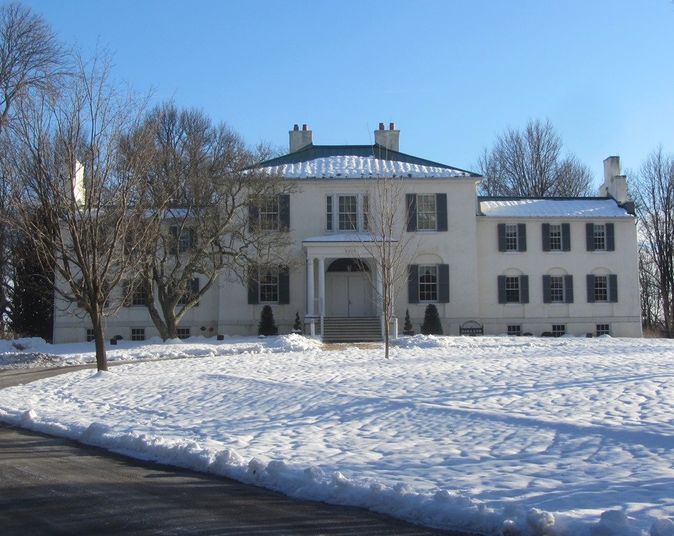

A convenient place to start a walk around Wilde Lake is near the corner of Green Mountain Circle and Waterfowl Terrace. Branching off the latter road is a path which descends steeply to a small stream. A right turn quickly brings you to the lake. The path traverses around the edge of the lake, through a small cove and onward to Wilde Lake dam. Traverse the rise beyond the lake and follow the path that winds down to the base of the dam and crosses the stream emerging from the base of the dam. The path then rises to the top of the alternate side of the bank. The path follows the northern shore of the lake, past the old boat house, barn and play ground to the eastern end of the lake. Follow the path across the stream feeding into the lake and turn left at the fork. Proceed along the edge of the lake and take the first left, up a slope, across a court and onto a path which ends at Waterfowl Terrace. Turn left and follow the road back to the starting point.
Wilde Lake is a man made lake constructed by the Columbia Association in 1967 by daming a Patuxent River tributary. This flooded fields between the historic stone buildings of Oakland manor and the pre-colonial Oakland mannor. It requires regular silt removal and excess water plant removal in the summer.
 History of Wilde Lake